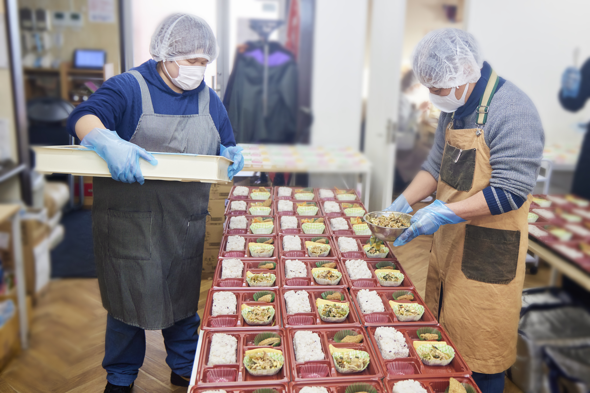
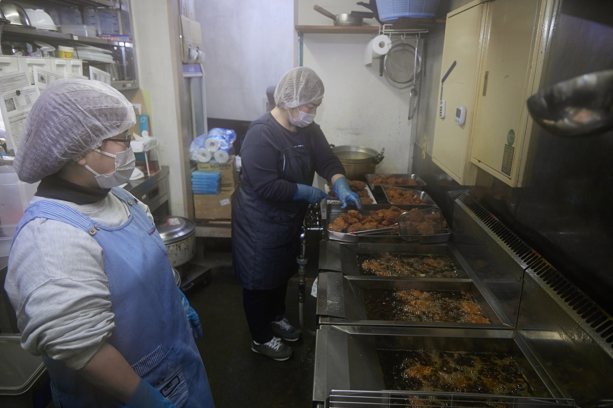

お弁当づくりの
お仕事
ララ・サニーでは、お弁当づくりを中心に、調理や盛り付け、パッキング、片付けなどを行っています。

ララ・サニーでは、お弁当づくりを中心に、調理や盛り付け、パッキング、片付けなどを行っています。

実際の作業や職場の雰囲気をご覧ください。見学後に、5日間の体験に進むかどうかを決めていただきます。
一 お仕事について
ララ・サニーでは、お弁当づくりを中心に、
調理や盛り付け、パッキング、片付けなどを行っています。
お弁当のおかずの調理や、食材の下準備に取り組みます。
容器におかずを盛り付け、包装などを行います。
調理器具の洗い物や、作業場所の清掃・片付けを行います。
二 働く条件
5時間勤務／休憩30分
出勤時間は、ご相談のうえで決定します。
事業所は365日営業。勤務日・休日はシフトにより決まります。
埼玉県最低賃金に準じます（2026年10月時点）。
利用開始後の勤務に適用されます。
徒歩・自転車での通勤が可能です。車通勤は原則できません。交通費の支給はありません。
利用するかどうかは、ご自身で選べます。体験中も同じ条件で利用できます。
三 見学と体験
見学後に、体験へ進むかどうかを決めていただきます。
文章や写真だけでは分からない、仕事や職場の雰囲気を確かめてください。
作業の様子や職場の雰囲気をご覧いただけます。気になることは、見学時にもご相談ください。
利用開始後と同じ仕事内容に取り組みます。出勤時間は、ご相談のうえで決定します。
体験期間中の賃金の支給はありません。昼食は希望する方が利用できます（一部実費負担）。
※体験への参加によって、採用・利用開始が確約されるものではありません。
ご利用を検討されている方へ
障がい者手帳・受給者証・医師の診断書のいずれかをお持ちの方は、まずはご相談ください。まだお持ちでない方も、お問い合わせいただけます。
四 よくあるご質問
実際に作業を経験しながら、希望や得意・苦手について支援員と話し合い、担当する作業を考えていきます。
はい。ご相談のうえで決定します。1日の実働は5時間、休憩は30分です。
見学後に、体験に進むかどうかを決めていただきます。
体験期間中の賃金の支給はありません。
いいえ。希望する方のみ利用できます（一部実費負担）。体験中も同じ条件です。
車通勤は原則できません。徒歩・自転車での通勤が可能です。交通費の支給はありません。
はい。まだお持ちでない方もご相談いただけます。利用に必要な条件や手続きは、ご相談時にご案内します。